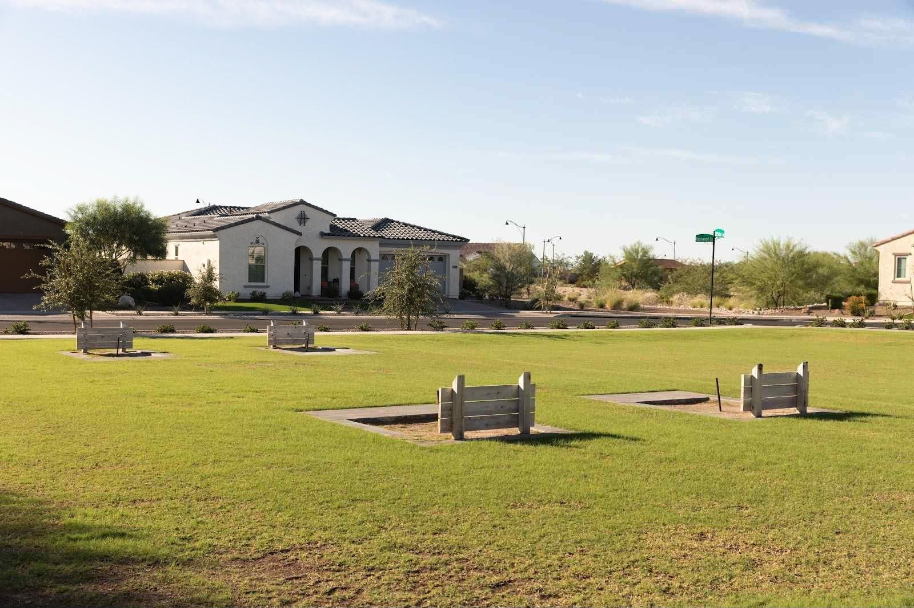
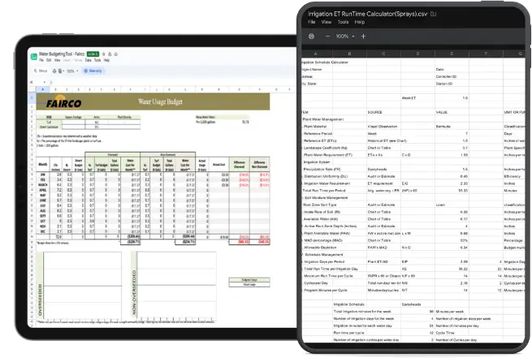

Water Management
Every drop has a job.
Water is your biggest landscape expense and the easiest one to waste. We inspect the system, set a budget, watch the numbers and adjust, so the plants get what they need and nothing runs down the gutter.
What you get

- Initial water audit during property startup
- Ongoing irrigation inspections
- Water budgeting
- Historical & real-time ET management
- ADWR schedule compliance
- Controller programming & management
- Smart controllers & 2-wire systems
- Flow sensors & master valves
- Mainline and valve system management
- Leak and water-waste identification
- Repair prioritization
- Conservation & conversion recommendations
- Certified Water Auditor oversight
We build the budget on historical ET (evapotranspiration), then run real-time ET and set run times to replace what the landscape actually lost. No more, no less.
How we keep the water honest
We can show you the math.
Our program includes a month-by-month water budget for your property, built from reference ET and plant coefficients, with actual use logged against it.
Run times are set station by station, and you can see where every number came from.

- Audit
- Budget
- Monitor
- Adjust
- Report
Let's talk about your property.
Tell us what you've got and what's bugging you about it. We'll come take a look and give you a straight answer.